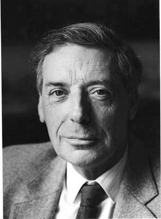

Who Was Bernard Williams?
Bernard Williams (1929–2003) was one of the most influential British philosophers of the twentieth century and a major figure in the development of contemporary ethics. His work extended across moral philosophy, moral psychology, political philosophy, personal identity, practical reason, and the history of philosophy. Williams became especially famous for questioning the attempt to reduce ethical life to one complete, universal, and systematically organized moral theory.
Bernard Williams' philosophy begins from the complexity of actual human life. He argued that people are not simply neutral moral calculators who can always detach themselves from their relationships, histories, emotions, identities, and deepest commitments in order to apply an abstract rule. Human beings already care about particular things, pursue particular projects, and understand themselves through forms of attachment that moral philosophy cannot simply ignore.
Williams is particularly associated with the concepts of moral luck, integrity, internal reasons, and ground projects. Through these ideas, he challenged influential forms of utilitarianism and Kantian ethics by asking whether systematic moral theories sometimes demand too much impersonality from the individuals whose actions they are supposed to guide. His concern was not merely theoretical: he wanted to understand what it means for an action to be genuinely one's own.
Williams also insisted that ethics cannot be understood independently of history and psychology. Moral concepts emerge within particular forms of human life, and philosophical reflection should remain aware of the cultural and historical circumstances in which people develop their values. His extensive engagement with ancient Greek thought, Nietzsche, Descartes, and modern moral philosophy contributed to a style of philosophy that combined analytical rigor with broad humanistic concerns.
His work remains important because it asks a difficult question: What happens when moral philosophy becomes too systematic? Williams believed that philosophy should illuminate ethical life, but he doubted that a single theory could provide a mechanical solution to every moral conflict. Tragedy, contingency, conflicting commitments, and uncertainty are not always failures of moral reasoning; sometimes they are permanent features of the human condition that ethical theory must learn to acknowledge.
Bernard Williams: Quick Facts
- Full name — Bernard Arthur Owen Williams
- Born — September 21, 1929
- Died — June 10, 2003
- Nationality — British
- Philosophical tradition — Analytic philosophy and contemporary moral philosophy
- Major fields — Ethics, moral philosophy, political philosophy, philosophy of action, moral psychology, personal identity, and the history of philosophy
- Major subjects — Moral luck, integrity, reasons for action, personal identity, shame, truth, authenticity, political judgment, and the limits of moral theory
- Famous concept — Moral luck
- Another famous concept — Internal reasons
- Major ethical concern — Integrity, personal agency, and the importance of deep commitments and projects
- Most influential work — Ethics and the Limits of Philosophy
- Important work — Moral Luck
Bernard Williams' Early Life and Education

Bernard Williams was born in Westcliff-on-Sea, Essex, England, in 1929. He was educated at Chigwell School before entering Balliol College, Oxford, where he studied the classical and philosophical curriculum known as Greats. This education gave him a lasting familiarity with Greek and Roman literature, history, and philosophy while also bringing him into contact with contemporary philosophical argument. The ancient world would remain a major intellectual resource throughout his career.
Williams developed his philosophical interests during a period when analytic philosophy was becoming increasingly influential in Britain. This tradition emphasized clarity, argument, logical discipline, and careful conceptual analysis. Williams shared its commitment to intellectual precision, but he refused to believe that philosophical rigor required reducing human life to simplified theoretical models. His work eventually became distinctive for combining analytical argument with historical, psychological, and literary sensitivity.
Throughout his career, Williams held important academic positions in Britain and the United States, including appointments at Cambridge, Oxford, and the University of California, Berkeley. These positions placed him at the center of major twentieth-century debates about ethics, political philosophy, personal identity, and the nature of philosophical inquiry. He became widely recognized as one of the most original and formidable philosophical voices of his generation.
Williams also possessed unusually broad intellectual interests. He wrote about ancient Greek philosophy, René Descartes, personal identity, truth, politics, morality, emotion, shame, and culture. Rather than treating these subjects as completely separate areas, he often explored the connections between them. His breadth helped him develop a philosophical style in which abstract argument remained connected with history and with the complicated realities of human experience.
This broad education also contributed to Williams' resistance to narrow disciplinary boundaries. He believed that philosophical questions about how human beings should live could not always be answered by examining formal principles alone. Literature, history, psychology, and the experience of earlier societies could reveal dimensions of ethical life that modern moral theories sometimes left unexplored.
Why Is Bernard Williams Important?
Bernard Williams is important because he transformed the terms of debate in modern ethics. He challenged philosophers who believed that morality could be organized into a single set of universal principles capable of generating systematic answers to ethical problems. Williams did not argue that philosophical reasoning was useless, but he questioned the assumption that successful ethics must resemble a scientific theory with a unified method for resolving every case.
His criticism was directed particularly toward utilitarianism and toward what he called the morality system, a conception of ethics strongly associated with modern moral theory and especially certain Kantian assumptions. Williams believed that these approaches could sometimes demand that individuals become excessively detached from the personal commitments and projects through which their lives acquire meaning.
Williams also helped establish the idea of moral luck as a central problem in contemporary philosophical debate. The concept challenges the attractive belief that people should be morally judged only for what lies completely within their control. Real moral judgment, Williams argued, is often entangled with circumstances, outcomes, and historical contingencies that no individual can fully control or predict.
Another major contribution concerns the nature of practical reasons. Williams argued that reasons for action must have an intelligible connection with an agent's motivations and practical concerns. This position challenged the idea that pure reason can simply impose a complete set of motivations upon any person independently of what that person cares about or is capable of recognizing as a reason for action.
His work remains influential because it takes human psychology seriously. Williams asks philosophy to recognize that people have histories, identities, emotions, relationships, ambitions, and deep commitments. Ethics, he argued, should not become so abstract that it loses contact with the people whose lives it claims to guide. For this reason, his philosophy continues to influence debates about agency, responsibility, authenticity, political judgment, and the limits of moral theory.
The Historical Context of Bernard Williams' Philosophy
Bernard Williams worked during the twentieth century, a period in which moral philosophy was strongly influenced by debates between utilitarianism, Kantian ethics, intuitionism, and later forms of liberal political philosophy. Many philosophers attempted to develop general principles that could explain what people morally ought to do and provide a rational foundation for moral judgment. The search for systematic ethical theory was therefore one of the defining ambitions against which Williams developed his distinctive position.
Williams questioned whether this search for a complete moral theory was always helpful. He believed that ethical life was historically and psychologically complicated. Human beings inherit values from cultures and traditions while also developing individual commitments that may conflict with one another. Moral life therefore contains plurality and tension that cannot always be eliminated by discovering a higher rule capable of reconciling every conflict.
His work was also shaped by renewed philosophical interest in ancient Greek ethics, existential questions, Nietzsche, and moral psychology. Williams found important resources in these traditions because they often treated ethical life as connected with character, social practices, emotions, and questions about what kind of life a person could genuinely recognize as worth living. These perspectives differed significantly from purely rule-based approaches to morality.
Williams was particularly interested in the historical development of moral concepts. He resisted the assumption that contemporary moral vocabulary represented a timeless and universally necessary framework for ethical thought. By examining earlier societies and philosophical traditions, he sought to show that concepts such as responsibility, shame, obligation, and truthfulness have complex histories and cannot always be understood adequately when removed from their social context.
The result was a philosophy that was both analytical and historically sensitive. Williams did not reject philosophical argument, precision, or criticism, but he rejected the assumption that philosophical success always requires the creation of a perfectly unified system. Ethical reflection, in his view, must remain capable of confronting the difficulty, contingency, and plurality of human life rather than attempting to remove those features through theoretical simplification.
Bernard Williams' Main Philosophical Ideas
1. Moral Luck
Moral judgment is often influenced by circumstances and outcomes that individuals do not completely control. Williams used this idea to challenge the belief that moral responsibility can always be separated cleanly from luck. His analysis reveals a tension between the desire to judge people only for what they control and the ordinary experience of holding people responsible for actions whose consequences depend partly upon chance and circumstance.
2. Integrity
People possess deep commitments and personal projects that help define who they are and give their actions a distinctive point of view. Williams argued that morality should not always demand that individuals abandon these commitments in order to serve an impersonal calculation. Integrity concerns the ability of an agent to act from commitments and purposes that can genuinely be recognized as their own.
3. Internal Reasons
Williams argued that genuine reasons for action must have some connection with an individual's motivations, concerns, or practical commitments. A reason may emerge through sound deliberation and reflection, but it cannot simply function as a mysterious external force that motivates an agent without any connection to that person's motivational life. This position became one of his most influential contributions to the philosophy of action.
4. The Limits of Moral Theory
Williams doubted that ethics could be captured completely by one universal theory. Human life contains conflict, tragedy, history, personality, competing values, and uncertainty that cannot always be resolved through a simple decision procedure. His criticism of moral theory was therefore a criticism of excessive systematization rather than a rejection of ethical reflection itself.
5. The Importance of Authenticity
Williams repeatedly emphasized the importance of living in a way that remains connected with one's character and deepest commitments. Moral thought should not alienate people completely from the things that make their lives genuinely their own. The question of authenticity therefore runs through much of his work: how can human beings reflect critically on their lives without becoming detached from the sources of meaning and practical necessity that make action possible?
What Is Moral Luck?
Moral luck is one of Bernard Williams' most famous philosophical ideas. The concept refers to situations in which people are morally assessed for actions, character, or outcomes that depend partly upon factors outside their complete control. The expression appears paradoxical because morality is often assumed to concern what a person freely chooses, whereas luck concerns precisely what happens beyond the person's control.
This creates a serious philosophical problem. Many moral theories assume that people should be judged only for what they voluntarily do or intentionally choose. Yet ordinary life often suggests something more complicated: the consequences of an action can depend on accidents, circumstances, other people, and events that the agent could not fully predict. Our moral responses frequently change when the outcome changes, even if the original intention remains the same.
Imagine two people who behave in exactly the same careless way while driving. One reaches home safely, while the other accidentally hits a pedestrian because someone unexpectedly steps into the road. Even if their initial carelessness and intentions were similar, people often judge the two situations very differently because the consequences are different. The outcome introduces an element of luck into moral assessment.
Williams used moral luck to show that moral judgment cannot always be neatly separated from the unpredictable world in which actions occur. Human beings act within circumstances they did not create and whose consequences they cannot completely control. Moral life is therefore partly shaped by contingency, and attempts to construct a perfectly luck-free conception of responsibility may fail to describe how people actually experience action and its consequences.
The importance of moral luck extends beyond questions of blame and punishment. It concerns how individuals understand themselves after significant events have occurred. A person may discover that an action undertaken in good faith had disastrous consequences, while another may find that a risky decision succeeded because circumstances happened to be favorable. These differences can transform a person's moral self-understanding even when luck played a substantial role in determining the final result.
The Problem of Moral Luck
The problem of moral luck creates tension between philosophical theory and ordinary moral judgment. Philosophers often want moral responsibility to depend only upon what a person controls, because it appears unfair to praise or blame someone for events caused entirely by chance. This idea is often described as a control principle: moral assessment should not extend beyond the sphere of the agent's voluntary action and control.
Williams argued that real moral life does not always follow this ideal. People frequently experience regret, guilt, pride, or responsibility in connection with outcomes they did not completely control. These experiences can remain morally significant even when luck played an important role. The fact that an outcome depended partly upon chance does not necessarily make the individual's involvement psychologically or ethically irrelevant.
Williams was especially interested in situations involving agent-regret. A person may deeply regret having caused harm even when the harmful outcome was not entirely within that person's control. This kind of regret is connected to the individual's particular role in what happened: it is not simply sadness that harm occurred, but regret that I was involved in the event and that my action formed part of its history.
Agent-regret therefore demonstrates the difference between an abstract observer's perspective and the perspective of someone who acted. From outside the situation, it may be possible to say that the outcome was largely accidental. For the agent, however, the event may remain deeply connected with personal identity and practical memory. The individual must continue to live with the fact that their action was part of what happened.
The concept of moral luck therefore reveals something important about human life: moral experience is not always as clean and controlled as philosophical theories sometimes assume. The world introduces uncertainty into action, and people must live with consequences that exceed their original intentions. Williams' analysis does not simply eliminate responsibility, but it challenges us to understand responsibility within a world in which action and contingency are permanently intertwined.
Bernard Williams on Integrity
Integrity is another central idea in Bernard Williams' philosophy, although his understanding of the concept differs from the ordinary idea of integrity as simply honesty or moral uprightness. For Williams, integrity is closely connected with the importance of a person's deepest commitments, purposes, and projects. These commitments may form part of the structure through which an individual understands who they are and why their actions matter.
Williams criticized moral theories that treat individuals primarily as instruments for producing the best overall outcome. According to this criticism, a theory may require someone to perform an action that conflicts fundamentally with that person's deepest commitments simply because an impartial calculation identifies a more desirable aggregate result. Williams questioned whether the agent's own relationship to the action could be treated as morally insignificant.
His concern was not that people should always follow personal desires or refuse every moral demand that conflicts with their interests. Williams recognized that personal projects can themselves be selfish, destructive, or open to criticism. His deeper point was that a moral theory must explain why an individual's identity and commitments should matter rather than simply treating them as obstacles to impartial calculation.
Integrity is therefore closely connected with agency. Human beings are not merely locations through which the consequences of actions pass. They initiate actions, form purposes, and take responsibility for projects that they recognize as their own. A theory that systematically treats every personal commitment as replaceable by an impersonal demand risks turning agents into instruments of a moral system rather than understanding them as persons who must themselves live the lives that moral philosophy attempts to regulate.
Integrity therefore raises a fundamental question about ethics: Can a moral theory demand too much distance from oneself? Williams believed that a philosophy which constantly requires people to view their own projects as morally insignificant may become alienating rather than genuinely ethical. The challenge is to preserve moral criticism without constructing a conception of morality that leaves no meaningful place for individual agency and deep personal commitment.
What Are Ground Projects?
Bernard Williams used the idea of ground projects to describe deep commitments that give an individual's life meaning and direction. A person's central project may involve family, creativity, political struggle, scientific work, art, friendship, intellectual inquiry, or another long-term commitment. Such projects are not merely occasional preferences; they may provide the practical framework through which a person understands what is worth doing.
These projects help organize practical reasoning. People do not wake every morning as completely neutral agents who must construct their entire identity from universal moral principles. Their existing commitments influence what they notice, what they care about, and what they can intelligibly regard as reasons for action. Practical reasoning begins within a life that already possesses relationships, concerns, memories, and purposes.
Williams believed that moral philosophy should take these commitments seriously. If a moral theory requires a person to abandon every deep personal project whenever an impersonal calculation demands it, the theory may threaten the conditions that make purposeful human action possible. The problem is not merely that such a demand would be psychologically difficult; it may undermine the very structure through which an individual is able to act as a distinct agent.
Ground projects are therefore closely connected with Williams' account of integrity. A person acts with integrity when their actions can be understood as expressions of commitments and purposes that genuinely belong within their life. This does not make those commitments immune from criticism, but it means that criticism must recognize the difference between reforming a person's values and demanding the complete disappearance of personal agency.
The concept of ground projects also connects Williams' ethics with his broader concern for authenticity. A meaningful life is not simply a sequence of correct calculations or externally imposed obligations. It is also a life shaped by commitments that a person can recognize as genuinely connected with who they are. For Williams, ethical reflection must therefore ask not only What should be done? but also What can this person intelligibly make their own?
Bernard Williams' Critique of Utilitarianism
Bernard Williams was one of the most important twentieth-century critics of utilitarianism. Utilitarian ethics generally evaluates actions according to their consequences and asks which available action will produce the greatest overall good, welfare, or happiness. This approach has considerable moral appeal because it insists that the effects of human actions upon others should not be ignored. Williams did not deny the importance of consequences, but he questioned the adequacy of utilitarianism as a complete account of ethical life.
Williams believed that utilitarianism possessed important insights, particularly its insistence that moral agents must consider the real consequences of what they do. However, he argued that the theory could become excessively impersonal by requiring individuals to view themselves primarily as producers of desirable outcomes. The agent's own commitments, relationship to the action, and sense of personal responsibility could then appear important only insofar as they contributed to maximizing overall utility.
His criticism focused especially on the problem of integrity. Utilitarianism may require an individual to perform actions that fundamentally conflict with that person's deepest commitments if doing so produces a better overall result. Williams argued that this can create a profound form of alienation, because the theory may ask the agent to regard their own projects and convictions merely as elements to be weighed within an impersonal calculation.
Williams also questioned the utilitarian tendency to treat the agent as responsible for producing the best possible consequences from a situation regardless of how those consequences are brought about. He believed that the causal and personal relationship between an agent and an action could itself be morally significant. What a person intentionally does cannot always be treated as interchangeable with what merely happens as a consequence of refusing to intervene.
Williams therefore asked whether morality should always demand this degree of self-distance. If an ethical theory treats a person's own projects, convictions, and identity as morally irrelevant whenever they conflict with aggregate utility, something important about human agency may be lost. His critique remains influential because it raises a continuing question for consequentialist ethics: how can concern for everyone's welfare be combined with adequate respect for the distinct standpoint and integrity of individual agents?
Bernard Williams and Jim and the Indians
One of Williams' most famous thought experiments involves a man named Jim. Jim arrives in a situation where several innocent people are about to be killed by an authority. He is offered a terrible choice: if Jim personally kills one person, the remaining people will be spared; if he refuses, all of them will be killed. The situation is deliberately constructed to create a sharp conflict between consequences and the individual's relationship to a particular action.
A straightforward utilitarian calculation appears to suggest that Jim should kill one person in order to save the larger number. Williams did not deny the enormous moral importance of the lives that could be saved, nor did he claim that Jim's refusal would automatically provide an easy solution. Instead, he questioned whether the moral problem could be completely resolved simply by counting the number of lives preserved.
The decision requires Jim himself to become the direct agent of a killing. Williams argued that utilitarian reasoning may treat this personal involvement as insufficiently important because the theory focuses primarily on the final outcome. Yet Jim's own relation to the action matters: he must decide whether he can deliberately perform the killing and subsequently live with that action as something that he himself has done.
The thought experiment also challenges the idea that responsibility can always be distributed impersonally across a causal chain. If Jim refuses, the authority will kill the larger number, but Jim did not originate that threat. If Jim accepts, he becomes directly involved in carrying out a killing. Williams believed that a moral theory must take seriously the difference between what another person does and what an individual chooses to do as an expression of their own agency.
The thought experiment therefore illustrates Williams' concern about agency and integrity. Moral decisions are not merely events that produce consequences; they are also actions performed by particular people with particular histories and commitments. Williams' purpose is not simply to prove that Jim must refuse or must accept. Rather, he shows that ethical conflict can remain genuinely difficult even after consequences have been calculated, because the question of what an individual can do without becoming alienated from their deepest commitments remains morally significant.
Bernard Williams' Critique of Kantian Ethics
Williams also criticized important aspects of Kantian ethics. Kantian moral philosophy emphasizes universal principles, duty, and the idea that moral requirements should possess a rational authority independent of an individual's particular desires or personal interests. Williams admired the seriousness of the Kantian attempt to understand morality, but he was skeptical that ethical life could be adequately explained through a completely universal and impersonal standpoint.
Williams was concerned that an excessively universal conception of morality could become detached from the actual motivations of human beings. People act from character, emotion, relationships, history, and personal commitments. They also inherit social identities and cultural traditions that shape what they regard as important. Williams believed that ethics should not pretend that these features are philosophically irrelevant simply because they cannot all be derived from a universal principle.
His criticism does not mean that Williams believed morality should be based only on subjective preference or that every individual desire is automatically justified. People can reflect critically upon their desires, discover inconsistencies, revise their commitments, and learn from the perspectives of others. Williams' objection was directed instead at the idea that practical reason can generate a complete set of reasons for action entirely independently of the agent's motivational and historical situation.
Williams also questioned the attempt to construct moral responsibility around an ideal of complete independence from luck. Kantian conceptions of responsibility often place great importance on what the rational agent voluntarily wills. Williams' discussion of moral luck challenges the possibility of separating ethical life so neatly from the contingent circumstances and consequences in which human action takes place.
Williams therefore challenged both utilitarian and Kantian approaches in different ways. His broader concern was directed against the attempt to construct a single moral framework that could stand above the complexity of human lives and provide a universal solution to every ethical conflict. He believed that ethical philosophy should remain critical and reflective while recognizing that history, personality, conflict, contingency, and practical necessity may prevent human moral life from ever becoming a perfectly unified system.
Bernard Williams' Theory of Internal Reasons
Bernard Williams' theory of internal reasons is one of his most important and controversial contributions to the philosophy of action. Williams questioned the assumption that a person can possess a genuine reason to act that has absolutely no connection with that person's motivations, concerns, commitments, or capacity for practical deliberation. His argument was therefore directed not merely at moral philosophy, but at a fundamental question about practical reason: what does it actually mean to say that someone has a reason to do something?
According to Williams' basic position, a statement such as "A has a reason to do X" must be capable of being connected, through sound deliberation, with the agent's subjective motivational set. This set includes far more than immediate desires. It can contain long-term commitments, projects, values, emotional concerns, dispositions, and interests that structure a person's practical life. A reason is internal when acting on it could intelligibly emerge from the agent's existing motivational world after reflection, improved information, imagination, or rational deliberation.
Williams contrasted this position with the idea of external reasons. An external reason, in the relevant sense, would be a reason that applies to a person independently of anything in that person's motivations and that could not be connected with those motivations through a rational deliberative route. Williams argued that such claims about reasons are philosophically problematic. Simply telling someone that they have a reason does not, by itself, explain how that alleged reason belongs to the practical standpoint from which that person can actually deliberate and act.
The theory does not mean that people should simply obey whatever they happen to desire at a particular moment. Williams explicitly allowed that deliberation can transform a person's motivations. Someone may discover new facts, correct a misunderstanding, imagine another person's situation, or recognize implications of commitments they already possess. The theory is therefore concerned with the relationship between reasons, motivation, explanation, and rational reflection rather than with a simplistic doctrine of selfish preference. It remains central to debates about whether moral reasons can genuinely claim authority independently of the motivational lives of particular agents.
Bernard Williams and the "Morality System"
Bernard Williams used the expression "the morality system" to criticize a particular historically developed conception of ethics. His target was not simply morality in the ordinary sense, nor was he arguing that human beings should abandon ethical reflection. Rather, he questioned a framework that gives exceptional authority to universal obligation, duty, blame, responsibility, and the distinction between what is strictly required and everything that lies outside moral obligation.
Williams believed that this conception can make the ethical life appear narrower than it really is. Human beings also care deeply about friendship, courage, loyalty, love, creativity, achievement, political commitment, self-respect, and the kind of person they wish to become. These concerns are not necessarily secondary simply because they cannot always be translated into universal duties. Williams therefore drew an important distinction between the broad field of the ethical and the more specific historical formation he called the morality system.
His criticism was partly philosophical and partly historical. Williams argued that modern moral concepts should not automatically be treated as timeless discoveries about the structure of practical reason. Concepts such as obligation and responsibility have histories, and philosophical reflection should investigate how particular social and intellectual developments have shaped them. This historical sensitivity was one reason Williams was drawn to ancient Greek ethics, which often organized ethical life around concepts of character, excellence, shame, and practical necessity rather than around a modern vocabulary of universal moral law.
Williams did not conclude that morality was meaningless or that ethical criticism should disappear. His deeper point was that philosophy should not mistake one historically influential moral vocabulary for the whole of ethical life. Understanding how human beings should live requires attention to history, psychology, culture, emotion, social relationships, and individual character as well as abstract argument. His critique of the morality system therefore forms part of his larger resistance to the attempt to compress the complexity of human life into one comprehensive theoretical structure.
Ethics and the Limits of Philosophy
Ethics and the Limits of Philosophy is widely regarded as Bernard Williams' most sustained and influential examination of moral philosophy. Published in 1985, the book asks what philosophy can genuinely accomplish when it attempts to answer the question of how human beings should live. Williams does not deny the importance of ethical reflection, but he challenges the expectation that philosophy must produce a complete and unified moral theory capable of generating determinate answers to every practical problem.
Williams rejected the expectation that ethics should resemble a scientific system built from a small number of foundational principles. Ethical life concerns beings whose identities are shaped by history, culture, psychology, social relationships, luck, conflict, and personal commitments. Because human life has this complexity, an elegant theory may achieve conceptual unity while failing to describe the experiences through which people actually encounter responsibility, regret, loyalty, suffering, and practical necessity.
A central concern of the book is the distinction between the broader ethical question of how one should live and the narrower conception of morality associated with universal obligation and impartial duty. Williams believed that philosophy should examine moral concepts critically and historically rather than simply assuming that contemporary moral categories represent a final and universal understanding of human life. Ethical thought, on this view, must remain aware of its own historical conditions and intellectual limitations.
Williams therefore encouraged philosophy to remain truthful and helpful without promising a degree of theoretical certainty that ethical life may not possess. This does not make philosophy useless or merely descriptive. Philosophy can clarify concepts, expose confusion, criticize destructive institutions, and help people understand the structure of their ethical experience. Yet it should resist becoming so systematic that it replaces the complexity of life with an artificially simplified picture of the human agent.
Bernard Williams on Personal Identity
Bernard Williams made important contributions to philosophical debates about personal identity. These debates ask what makes a person the same individual over time despite changes in memory, personality, bodily condition, beliefs, and psychological experience. Williams was especially effective at showing that apparently obvious answers become unstable when philosophers imagine unusual cases involving bodily exchange, memory transfer, psychological continuity, and radical transformations of consciousness.
His thought experiments challenged the temptation to assume too quickly that identity can be explained by one simple criterion. If memories were transferred from one body to another, for example, would the person go with the memories or remain connected with the original body? Williams used such cases not merely as intellectual puzzles but as ways of testing the concepts through which people ordinarily understand survival, fear, anticipation, and the first-person experience of being someone.
Williams' interest in personal identity also connects closely with his ethics. Questions about responsibility, punishment, regret, and personal projects depend upon the idea that individuals understand themselves as continuing agents with particular histories. A person does not experience an action merely as an event occurring somewhere in the world; they may experience it as something I did, and this first-personal relationship can remain ethically significant even when abstract theory attempts to describe the situation impersonally.
Williams therefore treated the self as more than a theoretical object to be analyzed from an external perspective. Personal identity matters because human beings live from particular points of view and understand their lives through memory, embodiment, relationships, commitments, and anticipated futures. His work helped demonstrate why an adequate account of persons must take seriously both philosophical analysis and the practical standpoint from which individuals experience their own lives.
Bernard Williams on Shame and Necessity
In Shame and Necessity, Bernard Williams examined ancient Greek ethical thought and challenged the assumption that modern moral concepts necessarily represent a superior stage in humanity's ethical development. The book questions familiar contrasts between supposedly primitive Greek ideas of responsibility and more sophisticated modern conceptions of freedom, guilt, and moral autonomy. Williams argues that the relationship between ancient and modern ethical life is considerably more complicated than a simple story of progress.
Williams gave particular attention to the concept of shame. Modern discussions sometimes contrast shame unfavorably with guilt, treating guilt as an inward and morally advanced emotion while portraying shame as little more than fear of public disapproval. Williams argued that this contrast is too crude. Shame can involve a profound awareness of one's identity, one's relationship to others, and the standards through which a person understands what kind of individual they are.
Shame certainly involves an awareness of how one appears in the eyes of others, but the relevant "other" need not be an arbitrary crowd. A person may internalize the perspective of someone whose judgment they respect, and this perspective can become connected with self-respect and personal identity. Shame can therefore reveal a person's concern about being seen as failing to live up to values that genuinely matter to them. In this respect, Williams believed that shame contains ethical resources that cannot simply be dismissed as socially imposed conformity.
The idea of necessity is equally important in the book. Greek tragedy and ancient literature often portray agents as confronting circumstances in which character, social position, power, fate, and practical necessity shape what they can do. Williams used these materials to explore responsibility without pretending that human agency exists in complete independence from luck and circumstance. His study of Greek thought thus supported his broader criticism of the morality system and his conviction that ethical life includes character, emotion, social identity, conflict, and necessity that cannot always be translated into universal moral obligation.
Bernard Williams and Ancient Greek Philosophy
Ancient Greek philosophy played an important role throughout Bernard Williams' work. His education in Classics and philosophy gave him a lasting familiarity with Greek literature, tragedy, historical writing, ethics, and political thought. Unlike philosophers who treated the history of philosophy merely as a collection of outdated theories, Williams regarded ancient texts as serious intellectual resources capable of challenging modern assumptions about responsibility, character, freedom, and the ethical life.
Williams was particularly interested in the differences between ancient Greek ethical concepts and modern ideas about morality. He questioned the assumption that contemporary Western moral philosophy represents the final or universally correct form of ethical understanding. Ancient thinkers and writers often approached ethical questions through concepts of character, excellence, honor, shame, friendship, courage, and the practical shape of a life rather than through a single system of universal obligations.
Greek tragedy strongly influenced Williams' understanding of moral conflict. Tragic situations can involve choices in which important values collide and every available action carries a serious cost. Such cases challenge theories that assume every moral problem must contain one solution capable of eliminating all reasonable regret. Williams believed that a person may do what is justified and nevertheless continue to recognize the genuine importance of what had to be sacrificed.
Williams found in ancient thought a richer appreciation of conflict, character, contingency, necessity, and luck. This did not mean that he wanted modern societies simply to return to ancient Greece. Rather, he believed that historical comparison could free philosophy from the assumption that its present categories are inevitable. The Greeks helped him develop an ethical approach more sensitive to the complexity of human life and to the possibility that some of our deepest convictions may have histories that philosophy must understand rather than ignore.
Bernard Williams on Truth and Truthfulness
In his later work, Bernard Williams turned increasingly toward questions about truth. His book Truth and Truthfulness, published in 2002, examines why truth matters and how societies can defend the value of truth without relying on simplistic philosophical foundations. Williams was concerned with a modern tension: people often strongly resent deception while at the same time becoming skeptical about whether objective truth is possible or philosophically defensible.
Williams focused on two fundamental virtues: accuracy and sincerity. Accuracy involves the effort to discover how things actually are and to resist error, wishful thinking, and intellectual carelessness. Sincerity concerns truthful communication and the resistance to deliberate deception. Together these virtues help explain why truthfulness is not merely an abstract property of propositions but also a set of practices and dispositions necessary for human inquiry and social cooperation.
His approach was historical as well as philosophical. Williams examined how practices of truthfulness could arise within human social life and why communities have powerful reasons to value accurate inquiry and honest communication. Cooperation, testimony, knowledge, and trust all become difficult when deception is normal and when no one is concerned with whether beliefs correspond to how things actually are. Truthfulness therefore has practical importance even in societies where people deeply disagree about religion, politics, metaphysics, or morality.
Williams' work on truth demonstrates the breadth and continuity of his philosophy. His concern with integrity and authenticity extended beyond individual moral decisions toward questions about intellectual honesty, social trust, and the survival of truthful inquiry. At the same time, he resisted both naïve absolutism and fashionable forms of skepticism that treated truth as dispensable. For Williams, a mature understanding of human life must recognize both the difficulty of reaching truth and the serious costs of abandoning the aspiration to do so.
Bernard Williams and Political Philosophy
Bernard Williams also made influential contributions to political philosophy, particularly through his criticism of approaches that attempt to derive political conclusions directly from abstract moral theories. Williams believed that politics has its own distinctive problems involving power, coercion, disagreement, order, legitimacy, and social cooperation. A political philosophy that begins with an ideal moral theory and then simply applies it to society may fail to understand the practical conditions that make political life necessary in the first place.
Political institutions must deal with persistent disagreement among people who possess different interests, identities, histories, and conceptions of the good life. They must also exercise power, sometimes coercively, while attempting to justify that power to those subject to it. Williams argued that political philosophy should begin from these realities rather than imagining that politics can be reduced entirely to an application of a universal moral formula. The question of political legitimacy therefore cannot simply be replaced by a question about which abstract moral theory is correct.
This approach later became strongly associated with political realism. Williams' realism emphasizes the distinctive character of political questions and resists what he regarded as political moralism—the tendency to treat politics as though it were nothing more than morality applied on a large scale. He stressed the importance of securing conditions such as order, protection, safety, trust, and cooperation before more ambitious political projects can operate. Political authority must therefore address problems that arise specifically from the existence of power and conflict.
Williams did not believe that politics should abandon ethical concerns or become a celebration of power for its own sake. His argument was that ethical criticism must take political reality seriously. A useful political philosophy should understand the institutions, historical circumstances, conflicts, and relations of power that actual societies confront. In this sense, his political thought continued the central theme of his ethics: philosophy becomes less illuminating when theoretical purity is purchased at the cost of losing contact with the complicated conditions of human life.
Bernard Williams and Philosophical Naturalism
Williams' philosophy was influenced by a broad form of naturalism. He believed that philosophical accounts of human beings should remain connected with the realities of human psychology, history, culture, embodiment, and the natural world. Human beings are not abstract rational machines who can be understood simply by imagining what they would conclude from a perfectly detached standpoint. They are creatures with emotions, desires, social histories, physical limitations, and particular perspectives on the world.
This naturalism did not mean reducing ethics to biology, physics, or evolutionary science. Williams was strongly opposed to simplistic forms of reductionism. The fact that human beings are natural creatures does not imply that ethical concepts can be replaced by scientific vocabulary. Rather, naturalism places a constraint on philosophy: an account of moral reason should not require us to imagine agents who bear little resemblance to the psychologically and historically situated beings that human beings actually are.
Williams therefore questioned philosophical approaches that treated moral reason as though it existed entirely outside human motivation and history. His work on internal reasons, personal projects, shame, truthfulness, and moral luck repeatedly asks how philosophical concepts connect with the forms of life from which they emerge. This concern also explains his use of history and genealogy, which investigate how particular values and concepts developed rather than simply treating them as timeless objects awaiting purely abstract analysis.
His naturalistic approach supported his criticism of systematic moral theory without producing skepticism about ethics itself. Ethical thought can remain rigorous, critical, and intellectually ambitious while recognizing the complicated kinds of creatures human beings are. Williams wanted philosophy to understand people truthfully rather than improving its theories by silently replacing real agents with idealized beings who have no history, character, emotion, or practical identity.
Bernard Williams on Moral Conflict and Tragedy
Bernard Williams believed that some moral conflicts are genuinely tragic. A person may confront a situation in which two or more important values conflict and where every available action requires the loss of something deeply significant. Such cases are not necessarily evidence that the person has reasoned badly or failed to discover the correct principle. Sometimes the structure of the world and the circumstances of action themselves create situations in which no choice can preserve everything that matters.
Many moral theories attempt to show that one overriding principle can always determine the correct answer. Williams questioned whether human life consistently possesses this kind of theoretical order. A person may have powerful reasons supporting incompatible actions, and practical reasoning may eventually require a choice without demonstrating that the unchosen alternative was morally insignificant. The existence of a justified decision does not automatically erase the value attached to what had to be abandoned.
Even after making the best possible decision, an individual may therefore reasonably experience regret. Williams was especially interested in forms of regret connected with the agent's own involvement in an event. The fact that an outcome depended partly upon luck does not necessarily remove the first-personal significance of having been the person through whom something happened. Ethical life can therefore retain emotional and practical residues that a purely theoretical verdict may be unable to eliminate.
This view connects Williams with the world of Greek tragedy. Tragic literature portrays human beings as acting within conditions they did not fully choose, where character, history, power, accident, and necessity shape the available possibilities. Williams believed philosophy must make room for this dimension of experience. Human beings do not always live in circumstances where every problem can be solved without loss, and an adequate ethics should recognize conflict, regret, contingency, and the painful consequences of unavoidable choices.
Reasons, Motivation, and Action
Williams believed that philosophical discussions of practical reason must explain how reasons actually connect with human action. A reason is not merely an abstract statement floating outside human life; if someone genuinely has a reason to act, there must be an intelligible account of how that reason could enter the person's deliberative perspective and help explain why the action would make sense from the standpoint of that particular agent.
This concern led Williams to connect practical reasons with an individual's subjective motivational set. A person's motivations include not only immediate desires but also commitments, values, long-term projects, emotional concerns, habits, loyalties, and dispositions that structure practical deliberation. The motivational set is therefore not a simple list of whatever someone happens to want at a particular moment. It represents a complex and changing network through which an agent encounters possibilities for action.
Importantly, Williams did not believe that people are permanently trapped inside their current motivations. Rational reflection can change what a person cares about. New information may reveal that a plan is impossible, imagination may allow someone to understand another perspective, and reflection may expose tensions between commitments. A person can therefore acquire motivations that were not consciously present at the beginning of deliberation, provided there is an appropriate rational route connecting the new motivation with the agent's existing practical standpoint.
Williams' theory remains controversial because it challenges the idea that there is always one set of practical reasons applying identically to every rational being regardless of motivation. Critics worry that this makes moral criticism too dependent on existing desires, while defenders argue that Williams offers a more realistic account of practical agency. Whatever position one takes, his theory forces philosophy to confront a difficult question: how can a reason genuinely guide an agent if it has no intelligible connection with anything that agent could come to care about through reflection?
Bernard Williams and Authenticity
Although Bernard Williams did not construct a single formal theory of authenticity, the idea runs throughout his philosophical work. He repeatedly asked whether people can live and act in ways that remain connected with their character, practical identity, and deepest commitments. For Williams, an adequate philosophy of human life must recognize that some projects and concerns are not merely interchangeable preferences. They may express who a person is and help make purposeful action possible.
A moral system can become alienating when it repeatedly asks individuals to view their own identities from a completely impersonal perspective. Williams was concerned about theories that treat an agent's particular commitments as morally irrelevant whenever an abstract calculation or universal principle points elsewhere. Human beings cannot always step entirely outside themselves and become neutral observers of their own lives, because they act from particular histories and practical standpoints that cannot simply be removed without changing the character of agency itself.
This does not mean that people should blindly obey whatever they happen to want. Authenticity involves reflection, criticism, and self-understanding. A person can examine their commitments, discover that some are destructive or confused, and change them over time. Yet Williams resisted the idea that critical reflection must culminate in the complete replacement of personal identity by an impersonal moral standpoint. Some projects can remain central precisely because they express an agent's deepest practical necessities.
Williams' concern for authenticity helps explain the unity of his work. His discussions of integrity, internal reasons, moral luck, shame, and truthfulness all raise questions about how individuals can understand themselves honestly while living within complex moral and social worlds. His philosophy therefore combines critical reflection with a demand for self-recognition: ethical thought should help human beings understand their lives without requiring them to become strangers to the projects, relationships, and commitments through which those lives acquire meaning.
Major Works of Bernard Williams
- Morality: An Introduction to Ethics (1972) — An influential and unusually critical introduction to moral philosophy that examines the nature of ethical thought while already displaying Williams' resistance to overly simple accounts of moral obligation and practical reason.
- Problems of the Self (1973) — A collection of important philosophical essays dealing with personal identity, the self, action, knowledge, and related problems concerning how individuals understand themselves as continuing agents.
- Utilitarianism: For and Against (1973) — Written with J. J. C. Smart, this work presents a major philosophical confrontation over utilitarian ethics and includes Williams' influential criticism of the theory's treatment of integrity and individual agency.
- Descartes: The Project of Pure Enquiry (1978) — A major philosophical study of René Descartes that examines the Cartesian ambition to achieve objective knowledge and explores the historical and conceptual character of Descartes' philosophical project.
- Moral Luck (1981) — A landmark collection of essays exploring moral luck, integrity, utilitarianism, moral conflict, practical necessity, personal identity, and reasons for action, including some of Williams' most influential philosophical writings.
- Ethics and the Limits of Philosophy (1985) — Williams' most sustained examination of ethics, the morality system, and the limitations of attempts to construct a complete and systematic moral theory capable of resolving every ethical question.
- Shame and Necessity (1993) — A major study of ancient Greek ethical thought exploring shame, responsibility, necessity, freedom, tragedy, and the complex relationship between ancient and modern moral concepts.
- Making Sense of Humanity (1995) — A collection of essays exploring ethics, history, objectivity, action, and the interpretation of human life while demonstrating Williams' broad engagement with both analytic philosophy and the history of ideas.
- Truth and Truthfulness (2002) — A philosophical investigation of truth, genealogy, and the virtues of accuracy and sincerity, defending the importance of truthfulness against both deception and forms of skepticism that dismiss truth as dispensable.
Bernard Williams' Most Important Concepts
Moral Luck
The idea that moral judgment, responsibility, regret, and the meaning of an action can be influenced by circumstances and outcomes that are not entirely within an individual's control. Moral luck challenges attempts to separate ethical evaluation completely from contingency and the unpredictable world in which human actions occur.
Integrity
The importance of a person's deepest commitments, projects, and practical identity in ethical life. Williams argued that moral theories must explain why individuals should not be treated merely as instruments for producing desirable outcomes while their own central commitments are regarded as morally insignificant.
Internal Reasons
Williams' view that genuine reasons for action must have an intelligible connection with an agent's motivations, commitments, concerns, and subjective motivational set. This connection may be developed through sound deliberation, information, and reflection rather than being limited to whatever the person immediately desires.
Ground Projects
Deep and enduring commitments that give a person's life direction and meaning and help structure the reasons that person has for acting. Such projects can create forms of practical necessity because abandoning them may threaten the agent's understanding of who they are and what makes purposeful action possible.
The Morality System
Williams' critical term for a historically developed conception of morality centered heavily on universal obligation, duty, blame, responsibility, and impersonal moral requirements. He distinguished this narrower system from the broader and more complex field of ethical life.
Agent-Regret
A distinctive form of regret connected with a person's own role in a harmful event, even when the outcome depended partly upon factors outside that person's complete control. Agent-regret illustrates why a theoretical distinction between fault and luck may not fully capture how individuals experience the consequences of their actions.
Authenticity
The importance of remaining connected with one's character, practical identity, and deepest commitments while still engaging in critical reflection about how one should live. In Williams' work, authenticity is opposed not to ethical criticism but to forms of moral theory that make agents completely alienated from themselves.
The Limits of Moral Theory
The conviction that no single systematic ethical theory may be capable of capturing every important dimension of human ethical life. History, tragedy, conflict, emotion, character, luck, and personal identity can create forms of ethical experience that resist reduction to one universal decision procedure or foundational moral principle.
Bernard Williams' Influence and Legacy
Bernard Williams had a profound influence on contemporary ethics and moral philosophy. His work changed discussions about utilitarianism, responsibility, moral psychology, practical reason, political philosophy, and the relationship between ethics and personal identity.
The concept of moral luck became especially influential. Philosophers continue to debate whether people can be held responsible for outcomes affected by circumstances beyond their control. The concept has also influenced discussions in law, psychology, literature, and everyday moral judgment.
Williams' defense of integrity also remains central to debates about impartial morality. Philosophers continue to ask whether ethical theories should require individuals to treat their deepest commitments as secondary whenever a calculation of overall benefit points in a different direction.
His legacy extends beyond particular arguments. Williams demonstrated that analytical philosophy could remain rigorous while also engaging with history, tragedy, psychology, literature, and the complicated realities of human life.
Criticisms of Bernard Williams' Philosophy
Bernard Williams' rejection of systematic moral theory has generated significant criticism. Some philosophers argue that abandoning the search for universal principles may leave ethics without sufficient guidance when people face difficult practical decisions.
His theory of internal reasons has also been controversial. Critics argue that people may possess moral reasons even when they currently lack any motivation to recognize them. They worry that Williams' position could make moral criticism too dependent on individual preferences.
Defenders of utilitarianism argue that Williams gives too much importance to personal integrity. They claim that morality sometimes legitimately requires individuals to sacrifice personal projects when doing so prevents serious harm or produces much better outcomes.
Nevertheless, these criticisms reveal the importance of Williams' philosophy. His arguments force moral theorists to explain how abstract principles connect with real human agents rather than simply assuming that ethical theory can ignore personality, motivation, history, and personal identity.
Bernard Williams' Philosophy Explained Simply
- What was Bernard Williams' main idea? Williams believed that ethical life is too complicated to be reduced completely to one universal moral system or decision procedure.
- What is moral luck? Moral luck occurs when people are morally judged for outcomes that depend partly upon circumstances or events beyond their complete control.
- What did Williams mean by integrity? Integrity concerns the importance of a person's deepest commitments and projects and the danger of becoming alienated from oneself through impersonal moral demands.
- What are internal reasons? Internal reasons are reasons for action that have an intelligible connection with an individual's motivations, concerns, or practical commitments.
- Why did Williams criticize utilitarianism? He believed utilitarianism could treat individuals mainly as instruments for producing the best overall consequences while giving insufficient importance to integrity and personal agency.
- Did Williams reject morality? No. Williams criticized a particular systematic conception of morality, but he remained deeply concerned with ethical questions about how human beings should live.
Why Does Bernard Williams Still Matter Today?
Bernard Williams remains highly relevant because modern societies constantly attempt to solve complex human problems through systems, algorithms, policies, and calculations. His philosophy reminds us that human decisions involve personal identity and commitments that cannot always be represented by numerical outcomes alone.
Moral luck is particularly relevant in contemporary discussions about responsibility. People are judged for accidents, social circumstances, opportunities, and outcomes shaped partly by factors outside their control. Williams provides a philosophical framework for understanding why these judgments remain so difficult.
His critique of impersonal ethics is also relevant to debates about artificial intelligence, medicine, law, politics, and public policy. These fields often require systematic decisions, but Williams' philosophy asks whether a system can always capture the perspective of the individual human being affected by its decisions.
Most importantly, Williams remains a philosopher of real human life. His work insists that ethics must take seriously regret, conflict, history, identity, emotion, and personal commitment. These realities continue to shape human existence regardless of how sophisticated moral theories become.
Frequently Asked Questions About Bernard Williams
Who was Bernard Williams?
Bernard Williams was a British philosopher who lived from 1929 to 2003. He was one of the most influential twentieth-century thinkers in ethics and is known for his work on moral luck, integrity, practical reason, personal identity, shame, and the limits of moral theory.
What is Bernard Williams famous for?
Bernard Williams is especially famous for the concept of moral luck, his criticism of utilitarianism, his defense of integrity, his theory of internal reasons, and his argument that ethical life cannot be completely reduced to one systematic moral theory.
What is moral luck according to Bernard Williams?
Moral luck refers to situations in which a person's moral judgment or responsibility is influenced by factors outside that person's complete control. Williams argued that real moral experience often depends on circumstances and outcomes shaped partly by chance.
What did Bernard Williams mean by integrity?
Integrity refers to the importance of a person's deepest commitments, values, and projects. Williams argued that moral theories should not always require individuals to become completely detached from the commitments that help define who they are.
Why did Bernard Williams criticize utilitarianism?
Williams believed that utilitarianism could become excessively impersonal by evaluating people mainly according to the consequences they produce. He argued that this approach could neglect the moral importance of agency, integrity, and personal commitments.
What are internal reasons?
Internal reasons are reasons for action that connect with an individual's motivations, concerns, commitments, or practical perspective. Williams questioned whether a person could genuinely have a reason that had absolutely no possible connection with that person's motivational world.
What are ground projects?
Ground projects are deep personal commitments that give an individual's life meaning and direction. They help shape what a person cares about and what that person has reason to do.
What is the morality system?
The morality system is Williams' critical description of a particular modern conception of ethics focused strongly on universal obligation, duty, blame, and impersonal moral requirements. He argued that ethical life is broader and more historically complex than this system allows.
What is Jim and the Indians?
Jim and the Indians is a famous thought experiment used by Williams in his critique of utilitarianism. It asks whether a person should personally perform a harmful action when doing so would prevent a greater number of people from being harmed.
What is agent-regret?
Agent-regret is the special form of regret a person may experience because they were personally involved in an event, even when the harmful outcome depended partly upon factors outside their complete control.
What was Bernard Williams' most important book?
Ethics and the Limits of Philosophy is often considered Williams' central work in ethics. It presents his sustained criticism of systematic moral theory and explores what philosophy can genuinely contribute to understanding ethical life.
Did Bernard Williams believe in universal morality?
Williams was deeply skeptical of attempts to establish one complete set of universal moral principles that could solve every ethical problem. He emphasized the importance of history, culture, personal identity, and the complexity of human moral experience.
Why is Bernard Williams important today?
Williams remains important because modern life increasingly relies on systems and calculations to make decisions. His philosophy reminds us that human agency, identity, regret, personal commitment, and moral conflict cannot always be reduced to an impersonal formula.
Related Modern and Contemporary Philosophers
Explore other important philosophers connected with ethics, utilitarianism, political philosophy, moral psychology, existential thought, and contemporary debates about human values.
Related Areas of Philosophy
Bernard Williams' philosophy connects ethics, moral philosophy, political philosophy, philosophy of action, epistemology, moral psychology, ancient philosophy, and contemporary philosophical debate.
Why Bernard Williams Still Matters
Bernard Williams remains one of the most important philosophers of modern ethics because he challenged the assumption that philosophical success requires the creation of a complete moral system. He insisted that ethical thought must remain connected with the complexity of actual human lives.
His ideas about moral luck and integrity reveal the limits of simple moral calculations. Human beings act in unpredictable circumstances, experience consequences they cannot fully control, and remain connected to personal commitments that help define who they are.
Williams did not offer an easy replacement for the moral theories he criticized. Instead, he asked philosophers to become more honest about what ethical theory can and cannot accomplish. Human life contains tragedy, conflict, regret, history, and uncertainty that may resist complete theoretical resolution.
This intellectual honesty remains Bernard Williams' lasting contribution. His philosophy encourages us to think seriously about morality without forgetting the people who must actually live with moral decisions. For that reason, Bernard Williams' philosophy continues to shape contemporary debates about ethics, responsibility, identity, and what it means to live a meaningful human life.
Explore Great Philosophers